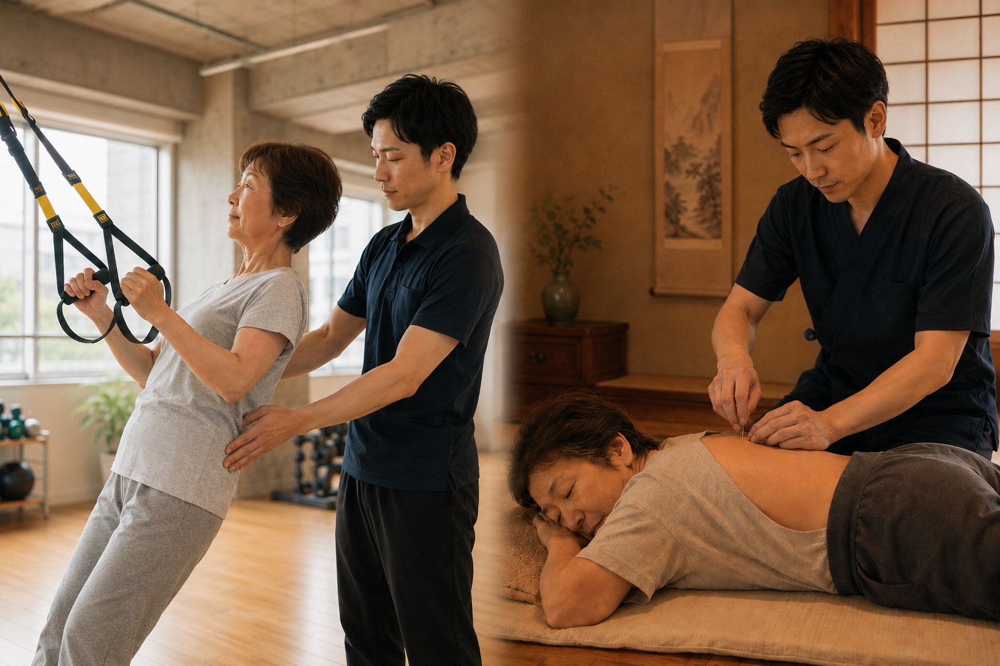

#16 腰痛ハイブリッド — 融合デザイン案
既存の 16.png（split-screen 1枚）に ⇔ と短いコピー を重ねて、運動×施術の相互補完を視覚化。6パターン提示。
A — 中央に⇔のみ（最小限）

⇔
最小限の介入。鍼灸 ⇔ 運動が「行き来する関係」と示唆。テキストなしで美しい。
B — ⇔ + 1行コピー「整える ⇔ ほぐす」
行為で対比。フィットネス側「整える」と鍼灸側「ほぐす」が中央の⇔で繋がる。最も読みやすい。
C-1 — 縦書きテキストのみ（記号なし・最も上品）
運動と施術のハイブリッド
記号一切なし。縦書きのテキストだけが中央に立つ。最も上品で Editorial。「⇔」のダサさを完全回避。
C-2 — 縦書き + 細いヘアライン + 端に極小ドット（推奨）
運動と施術のハイブリッド
上下に細いヘアライン（terracotta）＋ 端に小さなドット。「双方向に伸びる」を最小限の線で抽象化。⇔ のダサさを回避しつつ意味は伝わる。
C-3 — 縦書き + 線端に極小三角（流れの方向感）
運動と施術のハイブリッド
上下に小さな三角（外側に向く）。点よりも「両方向に流れる」感が明示的。ただし三角がやや具象的すぎる可能性も。
D — 上下ラベル + 中央サークル
SHISETSU — 施設で整える
⇔
同じ担当者
JITAKU — 自宅でほぐす
上下ラベルで「施設」「自宅」を明示、中央サークルが「同じ担当者がつなぐ」と明示。情報量最大。
E — フレーム外にラベルで挟む（縦書き）
RIGHT自宅で鍼灸
痛みを取る
痛みを取る
LEFT施設で運動
からだを整える
からだを整える
写真は無加工、両サイドに縦書き和文ラベル。最もタイポグラフィックで Editorial。スマホでは横並びに自動切替。
F — 下部に大きなコピー「鍛える ⇔ ほぐす」
下部グラデオーバーレイにコピー全部のせ。LP のヒーロー素材として最強。